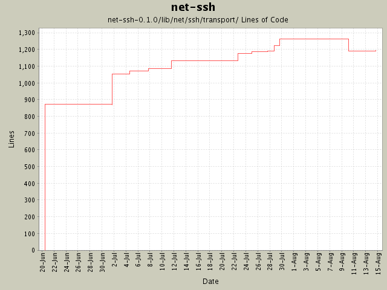

Summary Period: 2004-06-20 to 2004-08-14
[root]/net-ssh-0.1.0/lib/net/ssh/transport
 kex
(2 files, 304 lines)
kex
(2 files, 304 lines)

Total Lines Of Code:
1195 (2005-01-07 15:12)
| Author | Changes | Lines of Code | Lines per Change |
|---|---|---|---|
| minam | 46 (100.0%) | 1408 (100.0%) | 30.6 |
Version bump to 0.1.0
1 lines of code changed in:
Support for hostbased authenticaton.
3 lines of code changed in:
Fixed bug where if server version is nil (due to closed connection) program would crash.
2 lines of code changed in:
Changed buffer implementation and refactored it to a new module. Added
support for tunneling via HTTP proxy.
9 lines of code changed in:
Added support for the diffie-hellman-group-exchange-sha1 key exchange
algorithm, which is more secure than the diffie-hellman-group1-sha1
algorithm. Also fixed various TODOs in the kex stuff.
41 lines of code changed in:
Sanity checking for valid OpenSSL (module and library) versions.
34 lines of code changed in:
Added Daniel Hobe's suggestion of user-specified authentication methods. Also
bumped the version to 0.0.5.
1 lines of code changed in:
Added ssh-agent support, and added a #version property to both Net::SSH
and Net::SSH::Transport::Session.
13 lines of code changed in:
First pass at creating SSH-specific exception classes, as recommended by
Daniel Hobe.
31 lines of code changed in:
Added a logging infrastructure to aid in troubleshooting.
53 lines of code changed in:
Version bump.
1 lines of code changed in:
Added kex_algorithm property to Transport::Session, and added demo for setting
desired SSH algorithms.
3 lines of code changed in:
Clients may now specify their preferred algorithms.
65 lines of code changed in:
Initial implementation of port forwarding (local-to-remote). remote-to-local
remains to be done.
62 lines of code changed in:
Added rudimentary SFTP support. Still undocumented.
17 lines of code changed in:
Yay! Comments! Documentation!
193 lines of code changed in:
Began the tedious task of commenting the code. Also (finally) support the
ssh-dss server key type, although this depends on changes to Ruby's OpenSSL
module that have (at the time of this commit) not yet been formally accepted.
5 lines of code changed in:
Initial revision
874 lines of code changed in:
Generated by StatCVS 0.2.3